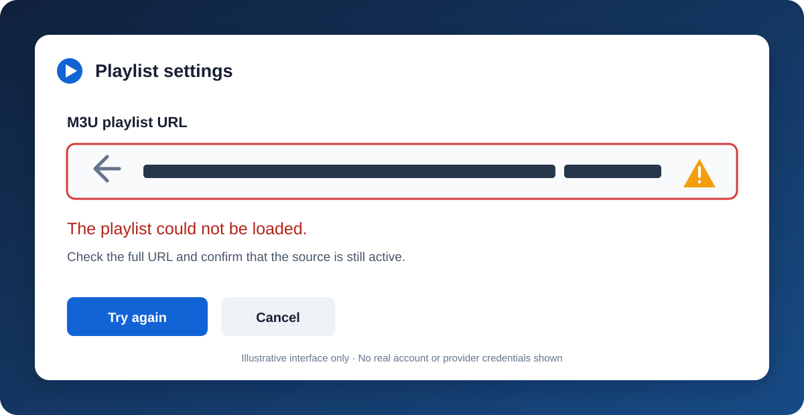
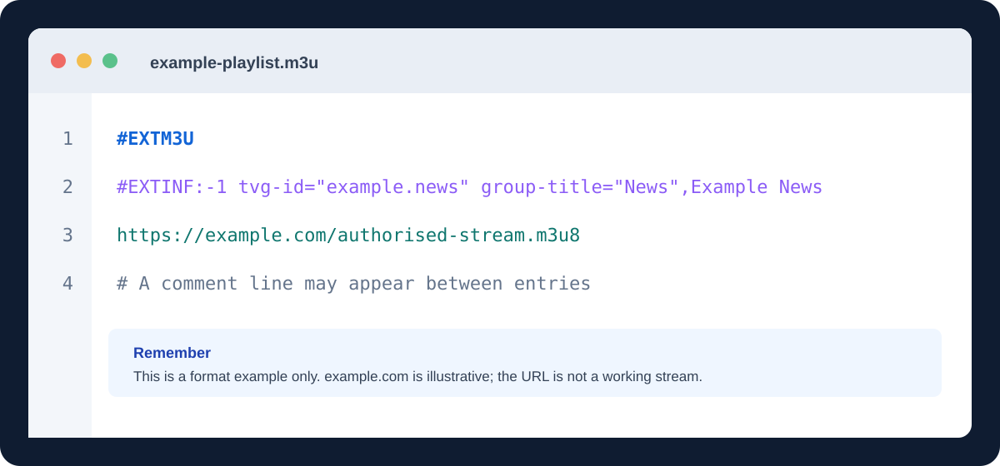

M3U Playlist Not Loading: Step-by-Step Fixes
Author: IPTV Guide UK · Published: 2026-11-20 · Last updated: 2026-11-21
If your M3U playlist is not loading, the most common causes are an incorrect or expired URL, malformed text structure, or an app that cannot retrieve the remote file. Start by checking the exact URL and the playlist header, then validate the entries locally before changing app or network settings.

Start with the type of playlist you are using
First identify whether the problem is with a remote playlist address or a file stored on your device. The checks are different, and changing unrelated app settings can make diagnosis harder.
| What you are opening | Check first | Next step |
|---|---|---|
| Remote M3U URL | Was the full address copied exactly, including its path and query string? | Copy it again from the original source. If it still fails, ask the source to confirm that the address is active. |
Local .m3u or .m3u8 file | Does the file contain readable playlist text and the expected header? | Open a copy in a plain-text editor and inspect its structure. Keep the original unchanged. |
| Playlist opens but has no entries | Does the file contain complete entry information and media-location lines? | Check the structure with the local validator, then confirm that the source response is populated. |
| Only some entries are missing | Are the affected entries complete, and does the app support their format? | Compare one affected entry with a working entry and check the app's supported formats. |
| Works in one app but not another | Are both apps using the same URL or exact same local file? | Compare app versions, format support and device/network settings before editing the playlist. |
For a quick structure check, use the M3U Playlist Validator. For a deeper explanation of headers, #EXTINF entries and metadata, see the M3U playlist format guide. The validator checks text locally; it does not test whether remote streams play.
Quick checklist
- Check that the URL is complete and uses the exact format supplied by its source.
- Confirm the link has not expired and was pasted without missing characters or altered query parameters.
- Remove accidental spaces or line breaks inside the URL; do not remove meaningful URL characters.
- Use the HTTP or HTTPS scheme supplied by the source; do not switch schemes by guesswork.
- Close and reopen the app; clear its cache only if the device or app provides that option and you understand its effect.
- Check the device date, time and time zone are correct.
- Compare the result with and without a VPN only where permitted; check whether DNS or network filtering could be blocking the host.
- For a local file, check its size, text encoding and whether it starts with the expected M3U header.
M3U playlist not loading because the URL is wrong or expired
How to recognise it
The app reports that the playlist cannot be reached, returns an authentication or access error, or loads no entries after the URL was copied from a message or account page.
How to fix it
Copy the full address again from the source that issued it. Check for missing characters, spaces, line breaks and truncated query parameters. If the URL includes a username, password or token, treat it as private and do not post it in screenshots or public support threads.
When it is not your fault
A link can be expired, disabled, account-limited or changed on the server. If the exact URL is correct but the server still refuses or returns no playlist, ask the provider to confirm that the link is active and intended for your app.
Whitespace or line breaks inside a URL
How to recognise it
The URL works when copied directly but fails after it has been copied through a document, email, chat app or notes field. A long address may have wrapped or acquired a hidden space.
How to fix it
Paste the address into a plain-text field and inspect the beginning, end and any wrapped sections. Remove only accidental whitespace. Do not delete punctuation or URL-encoded characters that are part of the address.
When it is not your fault
If the source itself sends a truncated or line-broken link, request a fresh copy. The app cannot reconstruct characters that were never supplied.
HTTP and HTTPS scheme mismatch
How to recognise it
A link may fail after someone manually changes http:// to https://, or vice versa. The server may not support both schemes for that address.
How to fix it
Restore the exact scheme provided by the source. Use HTTPS only when the service publishes and supports that HTTPS endpoint. A browser security warning or certificate error should be reported to the server operator rather than bypassed.
When it is not your fault
The server may have a certificate, redirect or endpoint configuration problem. Only its operator can correct that configuration.
App cache or local app state
How to recognise it
The same playlist works elsewhere, but one app continues showing old entries, a blank list or an error after the URL has been corrected.
How to fix it
Restart the app and device, then refresh or reload the playlist if the app offers that control. Check for app updates from the official app store or developer. Clear cache only when the app or device documents that option; clearing app data may remove saved settings or playlists.
When it is not your fault
An app update may introduce a bug or change supported formats. If the same file works in another compatible player, send the app developer the app version, device model and a redacted sample file.
Incorrect device date or time
How to recognise it
Secure connections may fail with certificate or time-related warnings when the device clock is significantly wrong. Other apps or websites may also report security errors.
How to fix it
Enable automatic date and time where available, confirm the time zone and restart the app. Menu names differ by device, so use the device maker's instructions.
When it is not your fault
If the clock is correct but a certificate is expired or incorrectly configured, the server operator must fix it.
DNS, VPN or network filtering
How to recognise it
The playlist host cannot be reached on one network but may respond on another. A VPN, DNS filter, router rule or workplace network policy can affect access to a domain.
How to fix it
Check that the device is online and that the hostname is spelled correctly. Temporarily compare another trusted network if you are allowed to do so. Review any VPN or DNS filtering settings you control, and ask the network administrator about blocked domains. Do not bypass workplace, school or legal restrictions.
When it is not your fault
The provider's host may be down, its DNS records may be misconfigured, or the route to its server may be unavailable. Ask the provider to check service status and hostname resolution.
Playlist file size, encoding or text structure
How to recognise it
A local file may fail to import, display garbled channel names, stop part-way through or show an empty list. Some apps also impose their own file-size or entry limits.
How to fix it
Make a backup before editing. Confirm the file is plain text, starts with #EXTM3U, and has complete #EXTINF records followed by media-location lines. M3U8 conventionally uses UTF-8; support for other encodings and large files varies by app. Remove accidental blank or stray lines and test a small copy if the app has documented limits.
When it is not your fault
If a file is complete and readable but exceeds a particular app's documented limits, the app may not be suitable for that file size. Ask the app developer about supported limits, or ask the source to provide a compatible export.

Error messages and what they mean
| Message or status | What it usually indicates | What to check |
|---|---|---|
| Empty playlist | The app received or parsed no usable entries. The response may be empty, or the file may contain no complete entries. | Check the file contents and ask the source whether the playlist is populated and active. |
| Invalid format | The app could not interpret the supplied text as a supported playlist format. | Check the header, EXTINF records, line structure and encoding. |
| 403 Forbidden | The server refused the request. The reason may involve permissions, authentication, policy or server configuration. | Confirm account access and ask the server operator to review the response. |
| 404 Not Found | The requested path or resource was not found on the server. | Re-copy the complete URL and ask the source to confirm the endpoint still exists. |
| Timeout | The request did not receive a response within the app or network's time limit. | Check connectivity and service status; a slow or unreachable server may be responsible. |
Check your playlist yourself
You can inspect the text structure without sending the playlist to a server. The M3U playlist validator checks the header, entries, URL syntax, duplicates and metadata locally in your browser. It does not contact stream URLs or confirm that playback works.
Frequently asked questions
Why does my M3U playlist say it is empty?
The file may contain only a header, may have no complete EXTINF and URL pairs, or the playlist response may be empty. Check the text and ask the provider whether the playlist is active.
Can an M3U validator tell me whether a stream works?
No. A local validator can inspect text structure and URL syntax, but it does not contact the server or test playback.
Should I change HTTP to HTTPS?
Only when the provider supplies a working HTTPS address for that playlist or stream. Do not guess or rewrite the URL scheme.
What does a 403 or 404 error mean?
A 403 response means the server refused the request. A 404 response means the requested resource was not found. The provider controls the server-side response.
Why does the playlist work on one device but not another?
The devices or apps may differ in format support, network configuration, cache, URL handling or resource limits. Compare the same playlist and network carefully.